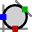
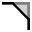
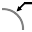

Geometriyi Değiştirme
TecZone içerisinde, geometrinizi değiştirmek, temizlemek veya eklemek için güçlü bir 2D çizim editörüne sahip olursunuz. Taslak moduna geçmek için S Kısayol düğmesini kullanın. Editör, parçayı kat açılma görünümünde görüntüler.

Geişmiş görünüm altında, Temizleme simgesine  veya
S Kısayol düğmesine basın.
veya
S Kısayol düğmesine basın.
Kat açılma işlemini yürütmek için farklı simgeler içeren bir menü açılır:

Taslak Paneli
| Simge | Sembol | Anlamı |
|---|---|---|
Seçim |
Nesneleri, hatları, girişleri vb. seçme |
|
|
Hat |
Bir hat çizme |
|
Bağlı hatlar |
Herhangi bir sayıda hat çizme |
Paraleller |
Bir hatta paralel çizme |
|
|
Normal |
Bir yaya teğet çizme |
|
Büküm hattı |
Bir hatta normal bir hat çizme |
|
Orta nokta yayı |
Bir büküm hattı çizme |
|
2 nokta yayı |
Bir merkez noktası, start noktası ve bitiş noktasından bir yay çizme |
|
3 nokta yayı |
İki tanımlanmış nokta (start noktası ve bitiş noktası) üzerinden bir dairesel yay çizme |
|
Tanjantal yay |
Taslak elemanlarına teğet bir yay çizme |
|
Dikdörtgen |
Bir dikdörtgen çizme |
|
Orta nokta-Dikdörtgen |
Merkezden bir dikdörtgen çizme |
|
Daire |
Bir daire çizme Dairenin merkez noktasını seçin ve imleci sürükleyerek yarıçapı belirleyin ya da yarıçapa yönelik bir değer girin. |
|
2 noktalı çevre |
Çevre uzunluğuna göre bir daire çizme Çevre üzerinde bir nokta seçin, ardından ikinci ve üçüncü noktaları seçin. |
3 noktalı çevre |
Çevre uzunluğuna göre bir daire çizme Çevre üzerinde bir nokta seçin, ardından ikinci ve üçüncü noktaları seçin. |
|
|
2 tanjantlı daire |
İki teğetli bir daire çizme. Daire çapını girin, ardından birinci teğeti ve ikinci teğeti seçin. |
 |
3 tanjantlı daire |
Üç teğetli bir daire çizme. Daire çapını girin, ardından birinci teğeti, ikinci teğeti ve sonra da üçüncü teğeti seçin. |
|
Poligon orta noktası - Köşe noktası |
Üç teğetli bir daire çizme. Daire çapını girin, ardından birinci teğeti, ikinci teğeti ve sonra da üçüncü teğeti seçin. |
|
Poligon orta noktası - Yan kenarın ortası |
Bir poligon çizer. Kenar sayısını belirtin ve bir merkez noktasını ve bir kenarın ortasını seçin. |
|
Yan kenarlı poligon |
Bir poligon çizer. Kenar sayısını belirtin ve bir kenarın start noktası ve bitiş noktasını tanımlayın. |
|
Yuvarlatma |
Köşeyi iki taslak elemanının köşe noktasında girilen yarıçapla yuvarlar, bu sayede teğet bir yay oluşturulur. |
 |
Faz |
İki taslak elemanının kesiştiği köşede bir eğim oluşturur. |
|
Yuvarlak kenar kırpma |
Girilen yarıçap ile iki taslak elemanının kesiştiği köşeyi keser. |
|
Köşeli kenar kırpma |
Bir dikdörtgenle iki taslak elemanının kesiştiği köşeyi keser. Bu dikdörtgenin boyutu önceden girilebilir. |
|
Kare biçimli serbest kesim |
Bir dikdörtgen serbest kesim oluşturur. Köşe mesafesini ve serbest kesim derinliğini girip ardından bir köşe seçmeniz gerekir. |
|
Uzunlamasına delik serbest kesimi |
Uzunlamasına delik şeklinde bir serbest kesim oluşturur. Köşe mesafesini, serbest kesim genişliğini ve serbest kesim derinliğini girip ardından bir köşe seçin. |
Üçgen serbest kesim |
Bir üçgen serbest kesim oluşturur. Köşe mesafesini, serbest kesim genişliğini ve serbest kesim derinliğini girip ardından bir köşe seçin. |
|
|
Anahtar deliği |
Girilen değerlerle bir daire içinde bir anahtar deliği oluşturur. |
|
Tam yuvarlatma 3 segment |
Birbirine bağlı üç taslak elemanını yuvarlar |
|
Elemanı uzat |
Uzatılacak taslak elemanını seçin |
|
Elemanı kırp |
Kısaltılacak taslak elemanını seçin |
|
Birleştir |
Birkaç ayrı bileşik çizgiyi kısaltmak ve birleştirmek için kullanılır |
|
Ofset elemanları |
Bir veya daha fazla taslak elemanını, taslak model kenarlarını veya model yüzlerini belirtilen bir mesafe kadar ofsetleyin |
|
Taşı |
ctrl ile bir taslak elemanı seçin, bir referans noktası seçin ve taslak elemanını taşıyın |
|
Döndür |
ctrl ile bir taslak elemanı seçin, bir dönme merkezi noktası, ardından bir start noktası ve bir bitiş noktası seçerek taslak elemanını döndürün. |
|
Ölçekleme |
ctrl ile bir taslak elemanı seçin, bir taban noktası, ardından bir start referans noktası ve bir bitiş noktası seçerek taslak elemanını ölçekleyin. |
|
Refleksiyon |
ctrl ile bir taslak elemanını seçin, ardından ayna çizgisinin başlangıcını ve sonra da ayna çizgisinin bitişini seçerek taslak elemanını aynalayın. |
|
Doğrusal örnek |
Bir veya daha fazla taslak elemanını bir veya iki doğrusal yol boyunca eşit mesafelerle yerleştirebileceğiniz çok sayıda referanslı kopyasını oluşturmak için, doğrusal örnekleri kullanın. Doğrusal örneğe tıklayın ve istediğiniz değerleri girin. |
|
Daire örneği |
Bir veya daha fazla taslak elemanını bir eksen etrafında eşit mesafelerle yerleştirebileceğiniz çok sayıda referanslı kopyasını oluşturmak için, dairesel örnekleri kullanın. Dairesel örneklere tıklayın ve istediğiniz değerleri girin. |
|
Yüzeyleri kombine et |
Yüzeyleri birbiriyle kombine etmek için iki veya daha fazla kapalı taslak elemanı seçin |
|
Kesit |
Seçilen elemanların bir kesim alanını oluşturmak için iki veya daha fazla kapalı taslak elemanı seçin |
|
Yüzeyi kırp |
Yüzeyi kısaltmak için iki veya daha fazla kapalı taslak elemanı seçin |
|
Serbest kesimi kopyala |
Bu takım aracılığıyla bir kenar boyunca bir çentiğin birden fazla kopyasını oluşturabilirsiniz. İlk olarak, kopyalar arasındaki mesafeyi ve oluşturmak istediğiniz çentik sayısını girin. Ardından, çentiğin bitişiğinde bulunan iki çizgi segmentine tıklayarak ilgili çentiği seçin |
|
Serbest kesimi sil |
Bu araç yardımıyla köşede veya bir çizgi segmenti boyunca bir çentiği silebilirsiniz. Çentik bitişiğinde bulunan iki çizgi segmentine tıklayın, çentik kaldırılır. |
|
Serbest kesimi yansıt |
Bu araç yardımıyla köşede veya bir çizgi segmenti boyunca bir çentiği yansıtabilirsiniz. Çentik bitişiğinde bulunan iki çizgi segmentine tıklayın, çentik yansıtılır |
|
Geometrik yeri |
Yeni bir Spline başlatmak için, start noktasına tıklayın; siz sonraki noktalara tıkladıkça Spline oluşturulacaktır. Spline’ı kapatmak istiyorsanız, ALT tuşuna basılı tutun ve ardından tıklayın |
|
Profil |
Taban uzunluğu, flanş yüksekliği, kalınlık, flanş açısı, iç yarıçapı değerlerini girin ve Enter’a basarak bir profil oluşturun |
|
Metin |
Lazer makinesi tarafından parçanın üzerine markalanacak metni çizmek amacıyla kullanılır. Bu araç düğmesine tıkladığınızda, giriş çubuğu size metin, ölçü ve dönüş açısına yönelik giriş kutularını gösterir |
|
Metin |
Herhangi bir TrueType yazı tipindeki karakterlerin şekillerini alıp bileşik çizgilere dönüştürmek amacıyla kullanılır. Daha sonra bileşik çizgilere lazer takımları uygulanabilir ve kesilebilirler. Bu düğmeye ilk kez tıklandığında, metin için kullanılacak yazı tipini seçmeniz için Yazı Tipi iletişim penceresi açılır. |
|
Standart şekiller |
Farklı yaygın şekilleri oluşturmak ve bunları çizime eklemek için kullanılır. Bu düğmeye tıkladığınızda, listelenen yaygın şekiller paletinden seçim yapmanıza imkan tanıyan Şekil Oluştur iletişim kutusu görüntülenir. |
|
Basit boyut |
İlk ölçülendirme noktasını ve ardından da ikinci ölçülendirme noktasını seçin ve ölçülendirme çizgisini pozisyonlayın. |
|
Referans boyut |
İlk ölçülendirme noktasını ve ardından da ikinci ölçülendirme noktasını seçin ve ölçülendirme çizgisini pozisyonlayın. |
|
Ölçüm zinciri |
İlk ölçülendirme noktasını ve ardından da ikinci ölçülendirme noktasını seçin, ölçülendirme çizgisini konumlandırın ve bir sonraki ölçülendirme noktasını seçin |
|
Yatay ordinat ölçüsü |
Ordinat ölçüleri, çizimde ordinat sıfırından ölçülen bir dizi ölçüdür. Bir referans noktası seçip ölçülendirmeyi konumlandırın |
|
Dikey ordinat ölçüsü |
Ordinat ölçüleri, çizimde ordinat sıfırından ölçülen bir dizi ölçüdür. Bir referans noktası seçip ölçülendirmeyi konumlandırın |
|
Açı Boyut |
Bir açı için bir ölçülendirme oluşturur. İlk satırı ve ardından açı ölçüsünü almak istediğiniz ikinci satırı seçin. |
 |
Yarıçap Boyut |
Bir yarıçap için bir ölçülendirme oluşturur. Yarıçapını boyutlandırmak istediğiniz daireyi seçin. Çapı ctrl ile boyutlandırın |
Yarıçap Boyut, kesiksiz uyarı hattı ile |
Bir yarıçap için sürekli kılavuz ile bir ölçü oluşturur. Yarıçapını boyutlandırmak istediğiniz daireyi seçin. Çapı ctrl ile boyutlandırın |
|
|
Etiketlendirme |
Çizime açıklama biçiminde notlar eklemek için kullanın. Bir açıklama oluşturmak için, gösterilecek metni yazın, okun işaret edeceği yere tıklayın ve tekrar metnin yerleştirileceği yere tıklayın. |
|
Bölüm ölçülendirme |
Düz çizgi ve eğri segmentler için ölçülendirme eklemek amacıyla kullanın. Ölçülendirmek istediğiniz segmente tıklayın ve ölçüyü yerleştirmek için tekrar tıklayın. Veya öğesine basılı tutun ve bir segmente tıklayarak ölçüyü otomatik olarak pozisyonlayın. |